Introduction
Balanced Tree Clothing Company prides themselves on providing an optimised range of clothing and lifestyle wear for the modern adventurer!
Danny, the CEO of this trendy fashion company has asked you to assist the team’s merchandising teams analyse their sales performance and generate a basic financial report to share with the wider business.
Available Data
For this case study there is a total of 4 datasets for this case study - however you will only need to utilise 2 main tables to solve all of the regular questions, and the additional 2 tables are used only for the bonus challenge question!
Product Details
balanced_tree.product_details includes all information about the entire range that Balanced Clothing sells in their store.
| product_id | price | product_name | category_id | segment_id | style_id | category_name | segment_name | style_name |
|---|---|---|---|---|---|---|---|---|
| c4a632 | 13 | Navy Oversized Jeans - Womens | 1 | 3 | 7 | Womens | Jeans | Navy Oversized |
| e83aa3 | 32 | Black Straight Jeans - Womens | 1 | 3 | 8 | Womens | Jeans | Black Straight |
| e31d39 | 10 | Cream Relaxed Jeans - Womens | 1 | 3 | 9 | Womens | Jeans | Cream Relaxed |
| d5e9a6 | 23 | Khaki Suit Jacket - Womens | 1 | 4 | 10 | Womens | Jacket | Khaki Suit |
| 72f5d4 | 19 | Indigo Rain Jacket - Womens | 1 | 4 | 11 | Womens | Jacket | Indigo Rain |
| 9ec847 | 54 | Grey Fashion Jacket - Womens | 1 | 4 | 12 | Womens | Jacket | Grey Fashion |
| 5d267b | 40 | White Tee Shirt - Mens | 2 | 5 | 13 | Mens | Shirt | White Tee |
| c8d436 | 10 | Teal Button Up Shirt - Mens | 2 | 5 | 14 | Mens | Shirt | Teal Button Up |
| 2a2353 | 57 | Blue Polo Shirt - Mens | 2 | 5 | 15 | Mens | Shirt | Blue Polo |
| f084eb | 36 | Navy Solid Socks - Mens | 2 | 6 | 16 | Mens | Socks | Navy Solid |
| b9a74d | 17 | White Striped Socks - Mens | 2 | 6 | 17 | Mens | Socks | White Striped |
| 2feb6b | 29 | Pink Fluro Polkadot Socks - Mens | 2 | 6 | 18 | Mens | Socks | Pink Fluro Polkadot |
Product Sales
balanced_tree.sales contains product level information for all the transactions made for Balanced Tree including quantity, price, percentage discount, member status, a transaction ID and also the transaction timestamp.
| prod_id | qty | price | discount | member | txn_id | start_txn_time |
|---|---|---|---|---|---|---|
| c4a632 | 4 | 13 | 17 | t | 54f307 | 2021-02-13 01:59:43.296 |
| 5d267b | 4 | 40 | 17 | t | 54f307 | 2021-02-13 01:59:43.296 |
| b9a74d | 4 | 17 | 17 | t | 54f307 | 2021-02-13 01:59:43.296 |
| 2feb6b | 2 | 29 | 17 | t | 54f307 | 2021-02-13 01:59:43.296 |
| c4a632 | 5 | 13 | 21 | t | 26cc98 | 2021-01-19 01:39:00.3456 |
| e31d39 | 2 | 10 | 21 | t | 26cc98 | 2021-01-19 01:39:00.3456 |
| 72f5d4 | 3 | 19 | 21 | t | 26cc98 | 2021-01-19 01:39:00.3456 |
| 2a2353 | 3 | 57 | 21 | t | 26cc98 | 2021-01-19 01:39:00.3456 |
| f084eb | 3 | 36 | 21 | t | 26cc98 | 2021-01-19 01:39:00.3456 |
| c4a632 | 1 | 13 | 21 | f | ef648d | 2021-01-27 02:18:17.1648 |
Product Hierarcy & Product Price
Thes tables are used only for the bonus question where we will use them to recreate the balanced_tree.product_details table.
balanced_tree.product_hierarchy
| id | parent_id | level_text | level_name |
|---|---|---|---|
| 1 | Womens | Category | |
| 2 | Mens | Category | |
| 3 | 1 | Jeans | Segment |
| 4 | 1 | Jacket | Segment |
| 5 | 2 | Shirt | Segment |
| 6 | 2 | Socks | Segment |
| 7 | 3 | Navy Oversized | Style |
| 8 | 3 | Black Straight | Style |
| 9 | 3 | Cream Relaxed | Style |
| 10 | 4 | Khaki Suit | Style |
| 11 | 4 | Indigo Rain | Style |
| 12 | 4 | Grey Fashion | Style |
| 13 | 5 | White Tee | Style |
| 14 | 5 | Teal Button Up | Style |
| 15 | 5 | Blue Polo | Style |
| 16 | 6 | Navy Solid | Style |
| 17 | 6 | White Striped | Style |
| 18 | 6 | Pink Fluro Polkadot | Style |
balanced_tree.product_prices
| id | product_id | price |
|---|---|---|
| 7 | c4a632 | 13 |
| 8 | e83aa3 | 32 |
| 9 | e31d39 | 10 |
| 10 | d5e9a6 | 23 |
| 11 | 72f5d4 | 19 |
| 12 | 9ec847 | 54 |
| 13 | 5d267b | 40 |
| 14 | c8d436 | 10 |
| 15 | 2a2353 | 57 |
| 16 | f084eb | 36 |
| 17 | b9a74d | 17 |
| 18 | 2feb6b | 29 |
Interactive SQL Session
The Dataset for this case study can be accessed from here. I will be using MySQL to solve this case study. In order to solve yourself this case study, simply go to the above link and choose MySQL Dialect (version > 8, if using MySQL version higher than 8 locally), copy & paste the Database schema into MySQL.
Here is the snapshot of it.
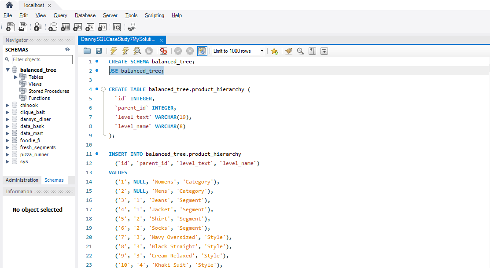
Case Study Questions
The following questions can be considered key business questions and metrics that the Balanced Tree team requires for their monthly reports.
Each question can be answered using a single query - but as you are writing the SQL to solve each individual problem, keep in mind how you would generate all of these metrics in a single SQL script which the Balanced Tree team can run each month.
High Level Sales Analysis
- What was the total quantity sold for all products?
- What is the total generated revenue for all products before discounts?
- What was the total discount amount for all products?
Transaction Analysis
- How many unique transactions were there?
- What is the average unique products purchased in each transaction?
- What are the 25th, 50th and 75th percentile values for the revenue per transaction?
- What is the average discount value per transaction?
- What is the percentage split of all transactions for members vs non-members?
- What is the average revenue for member transactions and non-member transactions?
Product Analysis
- What are the top 3 products by total revenue before discount?
- What is the total quantity, revenue and discount for each segment?
- What is the top selling product for each segment?
- What is the total quantity, revenue and discount for each category?
- What is the top selling product for each category?
- What is the percentage split of revenue by product for each segment?
- What is the percentage split of revenue by segment for each category?
- What is the percentage split of total revenue by category?
- What is the total transaction “penetration” for each product? (hint: penetration = number of transactions where at least 1 quantity of a product was purchased divided by total number of transactions)
- What is the most common combination of at least 1 quantity of any 3 products in a 1 single transaction?
Reporting Challenge
Write a single SQL script that combines all of the previous questions into a scheduled report that the Balanced Tree team can run at the beginning of each month to calculate the previous month’s values.
Imagine that the Chief Financial Officer (which is also Danny) has asked for all of these questions at the end of every month.
He first wants you to generate the data for January only - but then he also wants you to demonstrate that you can easily run the samne analysis for February without many changes (if at all).
Feel free to split up your final outputs into as many tables as you need - but be sure to explicitly reference which table outputs relate to which question for full marks :)
Bonus Challenge
Use a single SQL query to transform the product_hierarchy and product_prices datasets to the product_details table.
Hint: you may want to consider using a recursive CTE to solve this problem!
Let’s start solving
High Level Sales Analysis
- 1. What was the total quantity sold for all products?
Explanation:
This set of SQL queries provides a high-level sales analysis by calculating the total quantity sold for all products. Here’s a breakdown:
1) Total Quantity Sold for All Products:
SELECT SUM(qty) AS total_quantity_sold FROM sales;Calculates the overall total quantity sold for all products from the ‘sales’ table.
Final Concise Explanation: These SQL queries provide insights into the high-level sales analysis by calculating both the overall total quantity sold for all products and the total quantity sold for each individual product.
Part 1
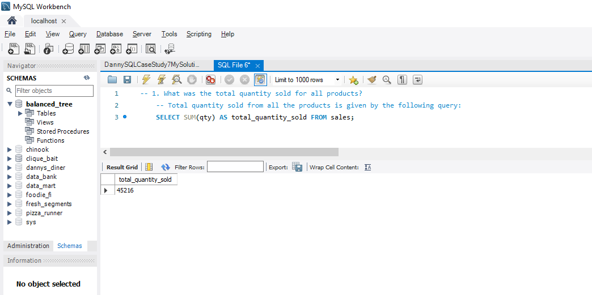
Part 2
Explanation:
2) Total Quantity Sold for Each Product:
SELECT PD.product_name, SUM(S.qty) AS total_quantity_sold
FROM product_details AS PD
JOIN sales AS S ON PD.product_id = S.prod_id
GROUP BY PD.product_name
ORDER BY total_quantity_sold DESC;Calculates the total quantity sold for each product by joining the ‘product_details’ and ‘sales’ tables on the product_id, grouping the results by product_name, and ordering them in descending order based on the total quantity sold.
Final Concise Explanation: The second query gives a breakdown of the quantity sold for each product, ordered from highest to lowest.
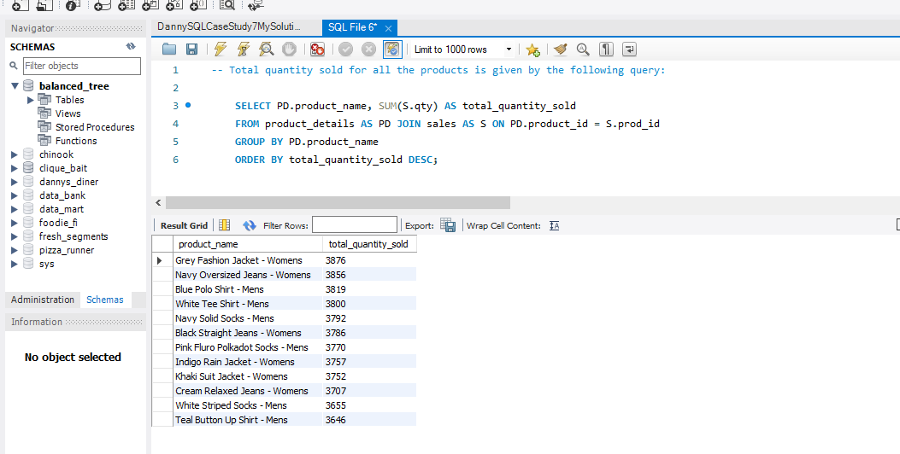
- 2. What is the total generated revenue for all products before discounts?
Explanation:
This set of SQL queries focuses on analyzing the total generated revenue for all products before discounts. Here’s a breakdown:
1) Total Revenue Before Discounts:
SELECT SUM(qty * price) AS total_revenue FROM sales;Calculates the overall total revenue before discounts by multiplying the quantity sold (qty) with the price for each product in the ‘sales’ table and then summing the results.
Final Concise Explanation: These SQL queries provide insights into the total generated revenue for all products before discounts. The first query gives the overall total revenue.
Part 1
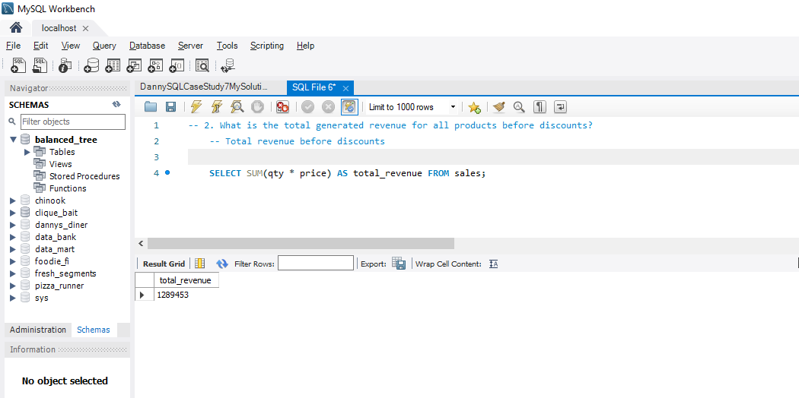
Part 2
Explanation:
2) Total Revenue Before Discounts for Each Product:
SELECT PD.product_name, SUM(S.qty * S.price) AS total_revenue
FROM product_details AS PD
JOIN sales AS S ON PD.product_id = S.prod_id
GROUP BY PD.product_name
ORDER BY total_revenue DESC;Calculates the total revenue before discounts for each product by joining the ‘product_details’ and ‘sales’ tables on the product_id, multiplying the quantity sold (qty) with the price, grouping the results by product_name, and ordering them in descending order based on the total revenue.
Final Concise Explanation: The second query breaks down the total revenue for each individual product, ordered from highest to lowest.
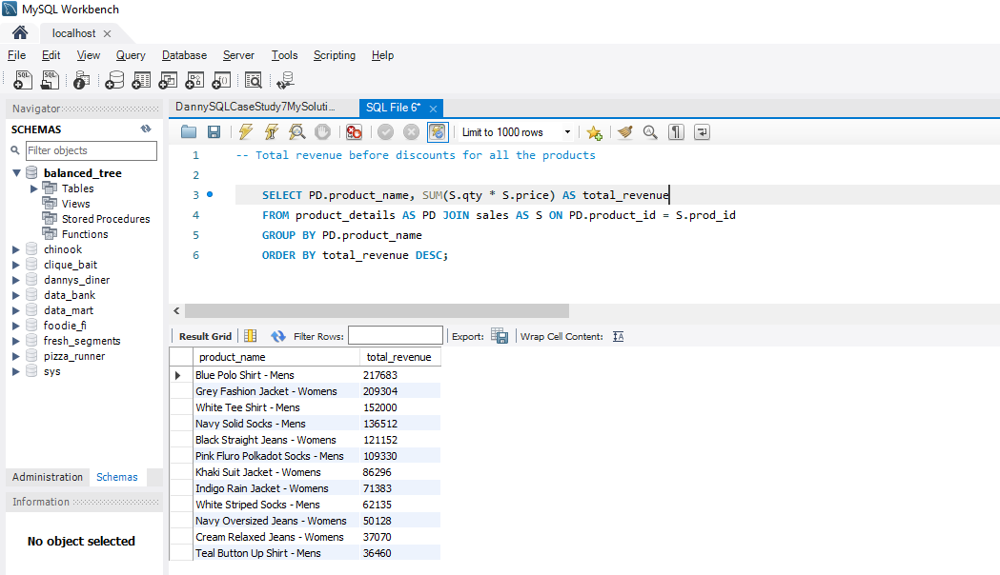
- 3. What was the total discount amount for all products?
Explanation:
This set of SQL queries focuses on analyzing the total discount amount for all products. Here’s a breakdown:
1) Total Discount Amount:
SELECT ROUND(SUM((qty * price * discount) / 100), 2) AS total_discount FROM sales;Calculates the overall total discount amount for all products by multiplying the quantity sold (qty) with the price, applying the discount percentage, summing the results, and rounding the total discount to two decimal places.
Final Concise Explanation: These SQL queries provide insights into the total discount amount for all products. The first query gives the overall total discount.
Part 1
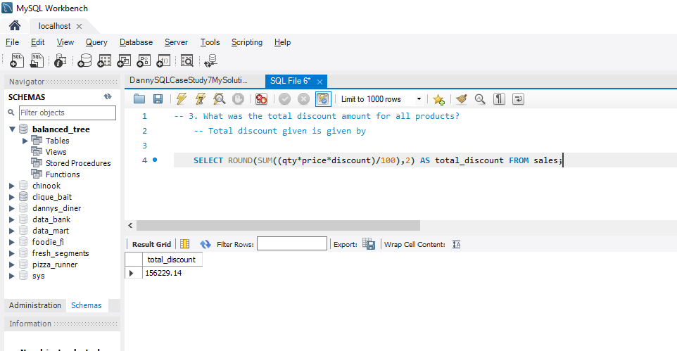
Part 2
Explanation:
2) Total Discount Amount for Each Product:
SELECT PD.product_name, ROUND(SUM((S.qty * S.price * S.discount) / 100), 2) AS total_discount
FROM product_details AS PD
JOIN sales AS S ON PD.product_id = S.prod_id
GROUP BY PD.product_name
ORDER BY total_discount DESC;Calculates the total discount amount for each product by joining the ‘product_details’ and ‘sales’ tables on the product_id, applying the discount percentage, summing the results, rounding the total discount to two decimal places, grouping the results by product_name, and ordering them in descending order based on the total discount.
Final Concise Explanation: The second query breaks down the total discount for each individual product, ordered from highest to lowest.
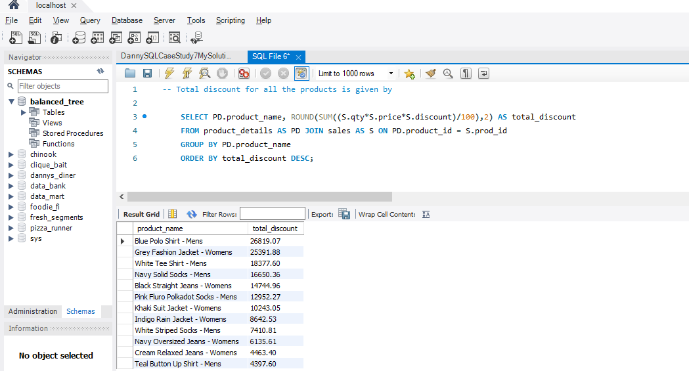
Transaction Analysis
- 1. How many unique transactions were there?
Explanation: This SQL query provides the count of unique transactions in the ‘sales’ table by counting the distinct values of the ‘txn_id’ column.
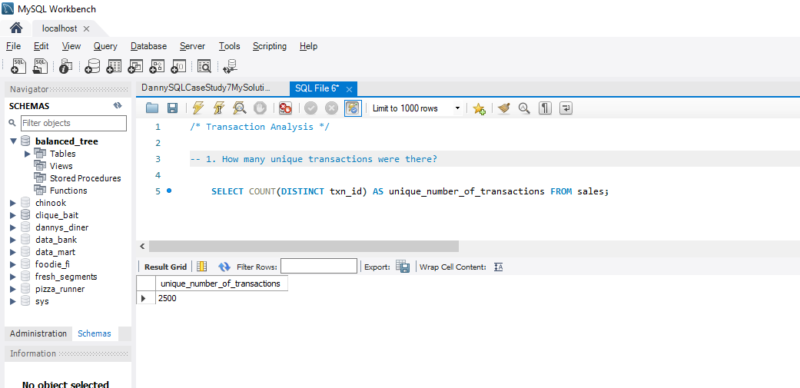
- 2. What is the average unique products purchased in each transaction?
Explanation:
This SQL query focuses on analyzing the average number of unique products purchased in each transaction.
1) Counting Unique Products for Each Transaction:
SELECT txn_id, COUNT(DISTINCT prod_id) AS unique_products_purchased
FROM sales
GROUP BY txn_id;Counts the number of unique products purchased for each transaction by applying the COUNT aggregation function to the distinct values of the ‘prod_id’ column and grouping the results by ‘txn_id’.
2) Calculating the Average Unique Products Purchased:
SELECT ROUND(AVG(unique_products_purchased), 0) AS avg_unique_products_purchased
FROM (
-- Subquery to count unique products for each transaction
SELECT txn_id, COUNT(DISTINCT prod_id) AS unique_products_purchased
FROM sales
GROUP BY txn_id
) AS unique_products_count;Calculates the average number of unique products purchased in each transaction by applying the AVG aggregation function to the results of the subquery (count of unique products for each transaction).
Final Concise Explanation: This SQL query provides the average number of unique products purchased in each transaction by counting the distinct values of ‘prod_id’ for each transaction and then calculating the average of these counts. The result is rounded to the nearest whole number.
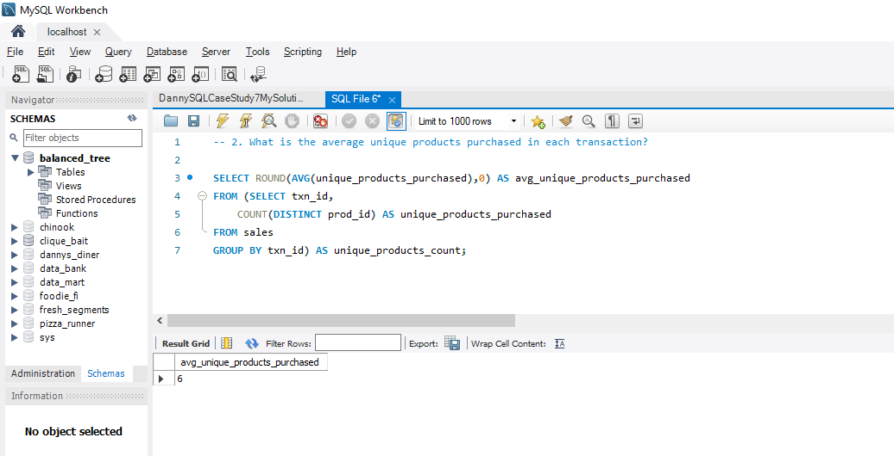
- 3. What are the 25th, 50th and 75th percentile values for the revenue per transaction?
Explanation:
This SQL query analyzes the 25th, 50th, and 75th percentile values for the revenue per transaction. Here’s a concise breakdown:
1) Calculating Revenue Per Transaction:
WITH revenue_per_transaction AS (
SELECT S.txn_id, SUM(S.qty * S.price) AS total_revenue
FROM product_details AS PD JOIN sales AS S ON PD.product_id = S.prod_id
GROUP BY S.txn_id
ORDER BY S.txn_id)Creates a temporary table ‘revenue_per_transaction’ that calculates the total revenue for each transaction by joining ‘product_details’ and ‘sales’ tables on the product_id, grouping by txn_id, and ordering by txn_id.
2) Calculating Percentile Values:
SELECT
MAX(CASE WHEN percentile_group = 1 THEN total_revenue END) AS percentile_25,
MAX(CASE WHEN percentile_group = 2 THEN total_revenue END) AS percentile_50,
MAX(CASE WHEN percentile_group = 3 THEN total_revenue END) AS percentile_75
FROM
(SELECT txn_id, total_revenue, NTILE(4) OVER (ORDER BY total_revenue) as percentile_group
FROM revenue_per_transaction) AS percentile_groups;Calculates the 25th (percentile_25), 50th (percentile_50), and 75th (percentile_75) percentile values for the revenue per transaction using the NTILE window function. The results are obtained by grouping the revenue values into four equal parts (quartiles) and extracting the maximum value for each quartile.
Final Concise Explanation: This SQL query provides the 25th, 50th, and 75th percentile values for the revenue per transaction by calculating the total revenue for each transaction and then using the NTILE window function to group the transactions into quartiles. The results are extracted by selecting the maximum value for each quartile.
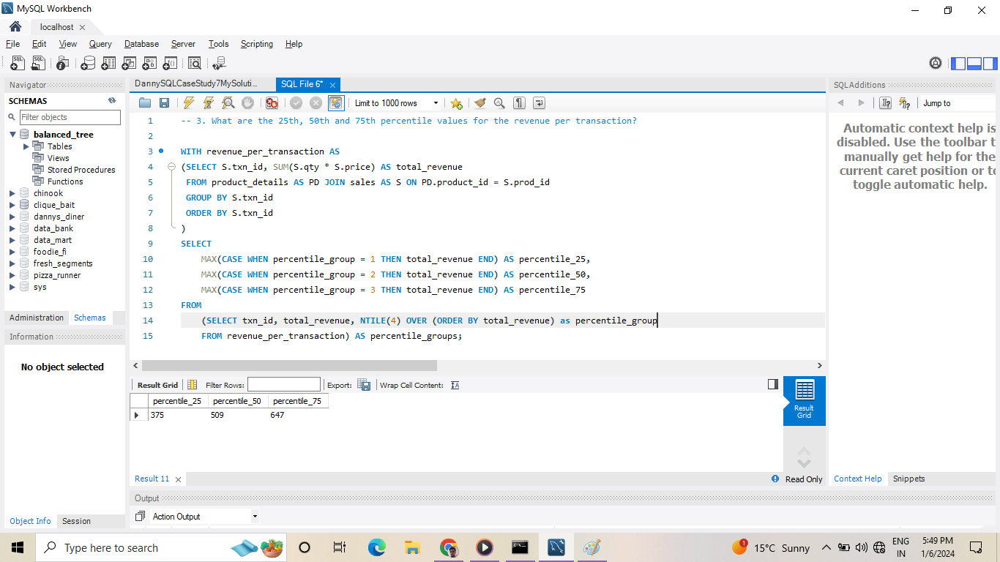
- 4. What is the average discount value per transaction?
Explanation:
This SQL query focuses on analyzing the average discount value per transaction.
1) Calculating Discount Value for Each Transaction:
SELECT txn_id, ROUND(SUM((price * qty * discount) / 100), 0) AS discount_value
FROM sales
GROUP BY txn_id;Calculates the discount value for each transaction by multiplying the price, quantity (qty), and discount percentage, summing the results, and rounding the total discount to the nearest whole number. The results are grouped by ‘txn_id’.
2) Calculating Average Discount Value:
SELECT ROUND(AVG(discount_value), 1) AS avg_discount_value
FROM (
-- Subquery to calculate discount value for each transaction
SELECT txn_id, ROUND(SUM((price * qty * discount) / 100), 0) AS discount_value
FROM sales
GROUP BY txn_id
) AS discount_table;Calculates the average discount value per transaction by applying the AVG aggregation function to the results of the subquery (discount value for each transaction) and rounding the average to one decimal place.
Final Concise Explanation: This SQL query provides the average discount value per transaction by calculating the discount value for each transaction and then finding the average of these values. The result is rounded to one decimal place.
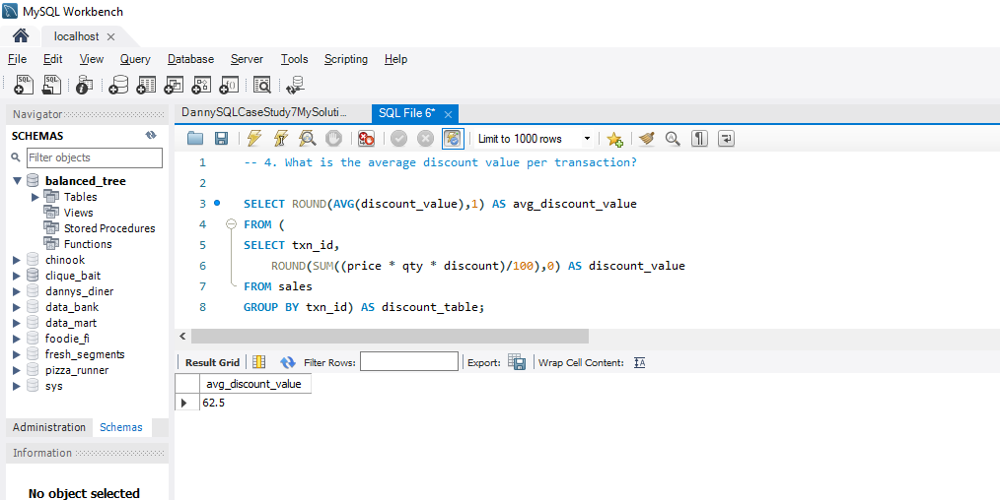
- 5. What is the percentage split of all transactions for members vs non-members?
Explanation:
This SQL query analyzes the percentage split of all transactions for members vs. non-members.
1) Calculating Member Transaction Percentage:
ROUND(100.0 * (COUNT(DISTINCT CASE WHEN member = 't' THEN txn_id ELSE 0 END))
/ (SELECT COUNT(DISTINCT txn_id) FROM sales), 2) AS member_transaction_pctCalculates the percentage of transactions made by members by counting the distinct ‘txn_id’ values for member transactions (‘t’) and dividing it by the total count of distinct transactions. The result is rounded to two decimal places.
2) Calculating Non-Member Transaction Percentage:
ROUND(100.0 * (COUNT(DISTINCT CASE WHEN member = 'f' THEN txn_id ELSE 0 END))
/ (SELECT COUNT(DISTINCT txn_id) FROM sales), 2) AS non_member_transaction_pctCalculates the percentage of transactions made by non-members by counting the distinct ‘txn_id’ values for non-member transactions (‘f’) and dividing it by the total count of distinct transactions. The result is rounded to two decimal places.
Final Concise Explanation: This SQL query provides the percentage split of all transactions for members vs. non-members. It calculates the percentage of transactions made by members and non-members and presents the results rounded to two decimal places.
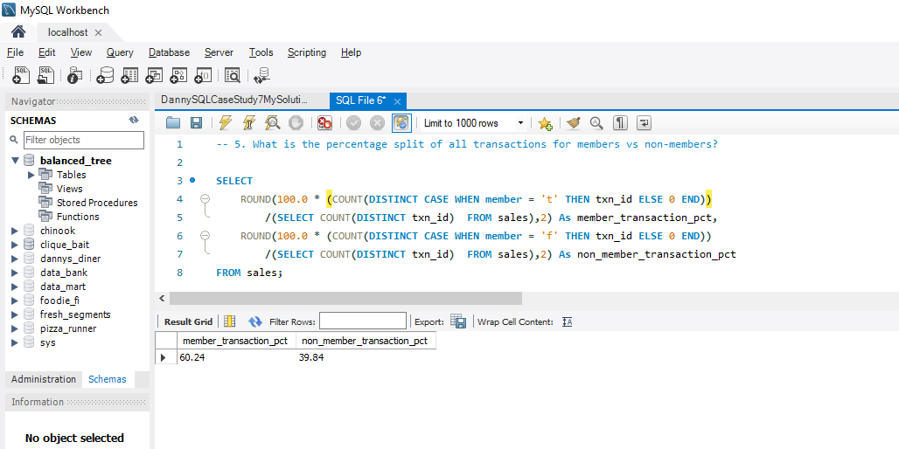
- 6. What is the average revenue for member transactions and non-member transactions?
Explanation:
This SQL query analyzes the average revenue for member transactions and non-member transactions.
1) Calculating Average Revenue for Member Transactions:
WITH member_transactions_cte AS (
SELECT member, txn_id, SUM(qty * price) AS avg_revenue
FROM sales
GROUP BY member, txn_id)Creates a Common Table Expression (CTE) named ‘member_transactions_cte’ that calculates the revenue for each transaction and groups the results by member status (‘member’) and transaction ID (‘txn_id’).
2) Calculating Average Revenue for Members and Non-Members:
SELECT member, ROUND(AVG(avg_revenue), 2) AS avg_member_transactions
FROM member_transactions_cte
GROUP BY member;Calculates the average revenue for member transactions and non-member transactions by applying the AVG aggregation function to the revenue values within the ‘member_transactions_cte’ CTE. The results are rounded to two decimal places and grouped by member status.
Final Concise Explanation: This SQL query provides the average revenue for member transactions and non-member transactions by calculating the revenue for each transaction, grouping the results by member status, and then finding the average revenue for each group. The result is rounded to two decimal places.
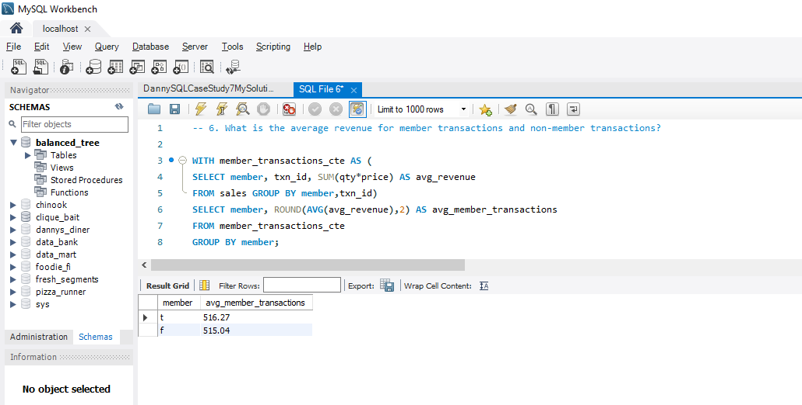
Product Analysis
- 1. What are the top 3 products by total revenue before discount?
Explanation:
This SQL query analyzes the average revenue for member transactions and non-member transactions. It calculates the total revenue before discount for each product by joining the ‘product_details’ and ‘sales’ tables on the product_id, multiplying the price by the quantity (qty), summing the results, and grouping by product_name. Orders the results in descending order based on total revenue before discount and limits the output to the top 3 products.
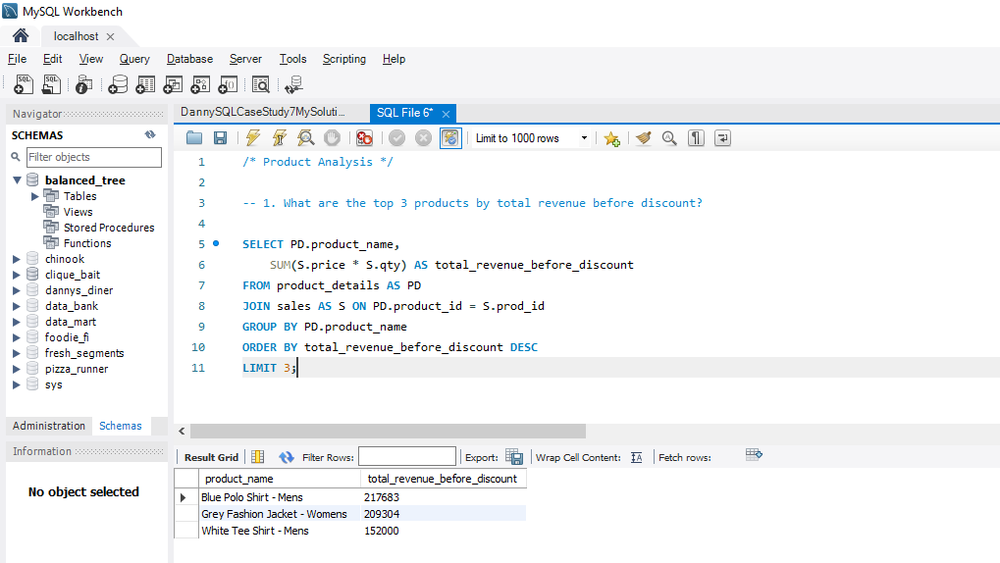
- 2. What is the total quantity, revenue and discount for each segment?
Explanation:
This SQL query analyzes the total quantity, revenue before discount, and discount for each segment. Here’s a concise breakdown:
1) Grouping Data by Segment:
SELECT PD.segment_name,
ROUND(SUM(S.qty), 2) AS total_quantity,
ROUND(SUM(S.qty * S.price), 2) AS total_revenue_before_discount,
ROUND(SUM((S.qty * S.price * S.discount) / 100), 2) AS discount
FROM product_details AS PD
JOIN sales AS S ON PD.product_id = S.prod_id
GROUP BY PD.segment_name;Groups the data by ‘segment_name’ from the ‘product_details’ table and calculates the total quantity, total revenue before discount, and total discount for each segment by joining with the ‘sales’ table.
Final Concise Explanation: This SQL query provides the total quantity, revenue before discount, and discount for each segment by grouping the data based on the ‘segment_name’ from the ‘product_details’ table and performing the necessary calculations. The results are rounded to two decimal places for clarity.
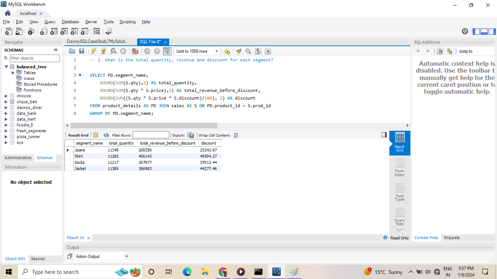
- 3. What is the top selling product for each segment?
Explanation:
This SQL query identifies the top-selling product for each segment. Here’s a concise breakdown:
1) Calculating Total Quantity Sold for Each Product and Segment:
WITH segment_product_qty_sales_cte AS (
SELECT PD.segment_name, PD.product_name, SUM(S.qty) AS total_qty_sold
FROM product_details AS PD JOIN sales AS S ON PD.product_id = S.prod_id
GROUP BY PD.segment_name, PD.product_name)Creates a Common Table Expression (CTE) named ‘segment_product_qty_sales_cte’ that calculates the total quantity sold for each product within each segment.
2) Ranking Products within Each Segment::
top_selling_products_cte AS (
SELECT segment_product_qty_sales_cte.segment_name,
segment_product_qty_sales_cte.product_name,
segment_product_qty_sales_cte.total_qty_sold,
ROW_NUMBER() OVER (PARTITION BY segment_product_qty_sales_cte.segment_name
ORDER BY segment_product_qty_sales_cte.total_qty_sold DESC)
AS row_num
FROM segment_product_qty_sales_cte)Creates another CTE named ‘top_selling_products_cte’ that assigns a row number to each product within each segment based on the total quantity sold in descending order.
3) Selecting the Top-Selling Product for Each Segment:
SELECT top_selling_products_cte.segment_name,
top_selling_products_cte.product_name,
top_selling_products_cte.total_qty_sold
FROM top_selling_products_cte
WHERE row_num = 1;Selects the top-selling product for each segment by filtering only the rows where the row number is 1 within the ‘top_selling_products_cte’ CTE.
Final Concise Explanation:
This SQL query determines the top-selling product for each segment by first calculating the total quantity sold for each product within each segment and then ranking the products based on the total quantity sold. The final result selects the top-selling product for each segment based on the row number.
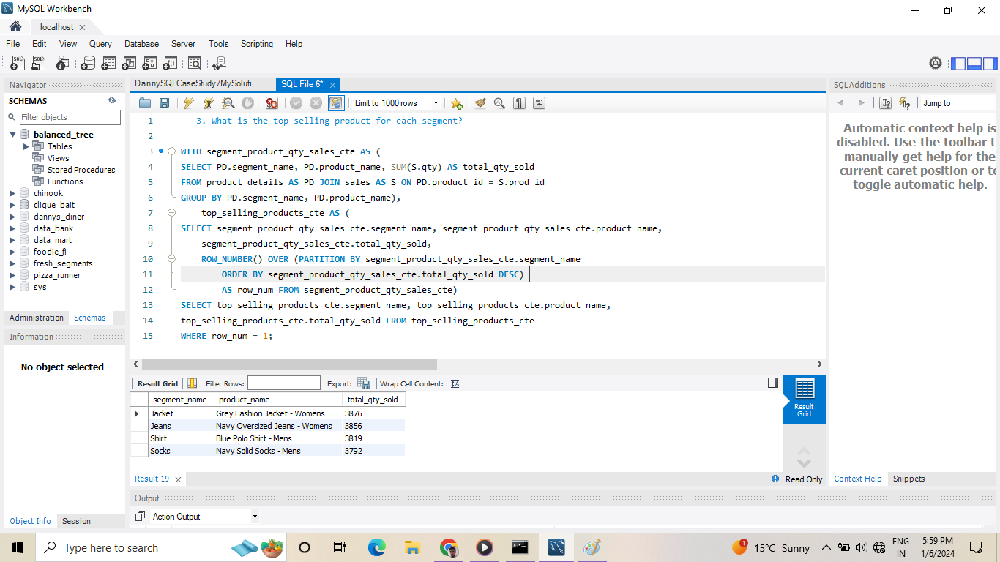
- 4. What is the total quantity, revenue and discount for each category?
Explanation:
This SQL query analyzes the total quantity, revenue before discount, and discount for each category. Here’s a concise breakdown:
1) Grouping Data by Category:
SELECT PD.category_name,
ROUND(SUM(S.qty), 2) AS total_quantity,
ROUND(SUM(S.qty * S.price), 2) AS total_revenue_before_discount,
ROUND(SUM((S.qty * S.price * S.discount) / 100), 2) AS discount
FROM product_details AS PD
JOIN sales AS S ON PD.product_id = S.prod_id
GROUP BY PD.category_name;Groups the data by ‘category_name’ from the ‘product_details’ table and calculates the total quantity, total revenue before discount, and total discount for each category by joining with the ‘sales’ table.
Final Concise Explanation: This SQL query provides the total quantity, revenue before discount, and discount for each category by grouping the data based on the ‘category_name’ from the ‘product_details’ table and performing the necessary calculations. The results are rounded to two decimal places for clarity.
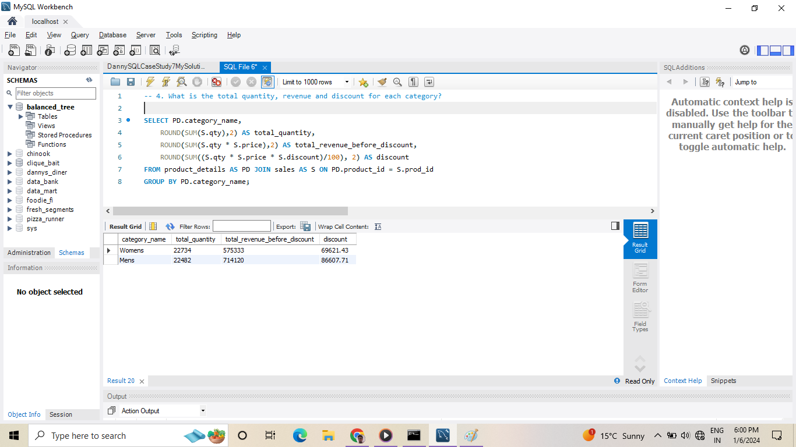
- 5. What is the top selling product for each category?
Explanation:
This SQL query identifies the top-selling product for each category.
1) Calculating Total Quantity Sold for Each Product and Category:
WITH category_product_qty_sales_cte AS (
SELECT PD.category_name, PD.product_name, SUM(S.qty) AS total_qty_sold
FROM product_details AS PD JOIN sales AS S ON PD.product_id = S.prod_id
GROUP BY PD.category_name, PD.product_name)Creates a Common Table Expression (CTE) named ‘category_product_qty_sales_cte’ that calculates the total quantity sold for each product within each category.
2) Ranking Products within Each Category:
top_selling_products_cte AS (
SELECT category_product_qty_sales_cte.category_name,
category_product_qty_sales_cte.product_name,
category_product_qty_sales_cte.total_qty_sold,
ROW_NUMBER() OVER (PARTITION BY category_product_qty_sales_cte.category_name
ORDER BY category_product_qty_sales_cte.total_qty_sold DESC)
AS row_num
FROM category_product_qty_sales_cte)Creates another CTE named ‘top_selling_products_cte’ that assigns a row number to each product within each category based on the total quantity sold in descending order.
3) Selecting the Top-Selling Product for Each Category:
SELECT top_selling_products_cte.category_name,
top_selling_products_cte.product_name,
top_selling_products_cte.total_qty_sold
FROM top_selling_products_cte
WHERE row_num = 1;Selects the top-selling product for each category by filtering only the rows where the row number is 1 within the ‘top_selling_products_cte’ CTE.
Final Concise Explanation:
This SQL query determines the top-selling product for each category by first calculating the total quantity sold for each product within each category and then ranking the products based on the total quantity sold. The final result selects the top-selling product for each category based on the row number.
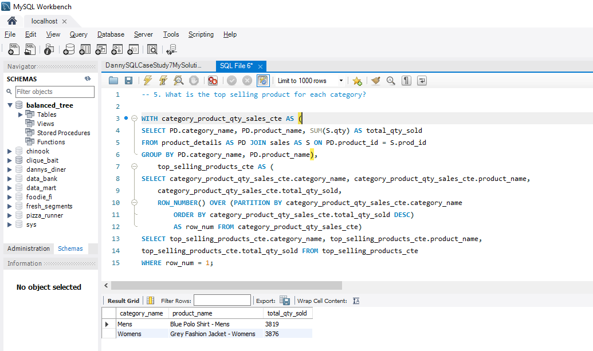
- 6. What is the percentage split of revenue by product for each segment?
Explanation:
This SQL query analyzes the percentage split of revenue by product for each segment. Here’s a concise breakdown:
1) Calculating Segment-wise Product Revenue:
WITH segment_product_revenue_cte AS (
SELECT PD.segment_name, PD.product_name,
SUM(S.price * S.qty) AS segment_product_revenue
FROM product_details AS PD JOIN sales AS S ON PD.product_id = S.prod_id
GROUP BY PD.segment_name, PD.product_name)Creates a Common Table Expression (CTE) named ‘segment_product_revenue_cte’ that calculates the revenue for each product within each segment.
2) Calculating the Percentage Split of Revenue:
SELECT segment_name, product_name,
ROUND(100.0 * segment_product_revenue / (
SUM(segment_product_revenue) OVER (PARTITION BY segment_name)), 2)
AS revenue_pct
FROM segment_product_revenue_cte
ORDER BY segment_name, product_name;Calculates the percentage split of revenue for each product within each segment by dividing the product’s revenue by the total revenue within the segment. The result is rounded to two decimal places.
Final Concise Explanation: This SQL query provides the percentage split of revenue by product for each segment by calculating the revenue for each product within each segment and then determining the percentage of each product’s revenue relative to the total revenue within the segment. The results are ordered by segment name and product name for clarity.
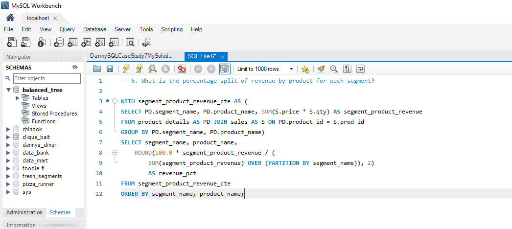
The output for the above query is:
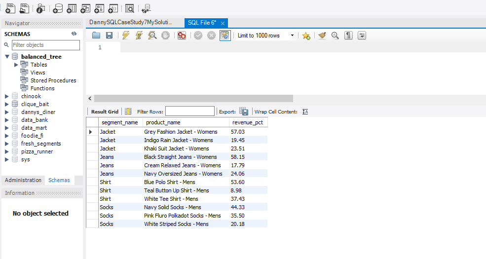
- 7. What is the percentage split of revenue by segment for each category?
Explanation:
This SQL query analyzes the percentage split of revenue by segment for each category.
1) Calculating Category-wise Segment Revenue:
WITH category_segment_revenue_cte AS (
SELECT PD.category_name, PD.segment_name,
SUM(S.price * S.qty) AS category_segment_revenue
FROM product_details AS PD JOIN sales AS S ON PD.product_id = S.prod_id
GROUP BY PD.category_name, PD.segment_name)Creates a Common Table Expression (CTE) named ‘category_segment_revenue_cte’ that calculates the revenue for each segment within each category.
2) Calculating the Percentage Split of Revenue:
SELECT category_name, segment_name,
ROUND(100.0 * category_segment_revenue / (
SUM(category_segment_revenue) OVER (PARTITION BY category_name)), 2)
AS revenue_pct
FROM category_segment_revenue_cte
ORDER BY category_name, segment_name;Calculates the percentage split of revenue for each segment within each category by dividing the segment’s revenue by the total revenue within the category. The result is rounded to two decimal places.
Final Concise Explanation: This SQL query provides the percentage split of revenue by segment for each category by calculating the revenue for each segment within each category and then determining the percentage of each segment’s revenue relative to the total revenue within the category. The results are ordered by category name and segment name for clarity.
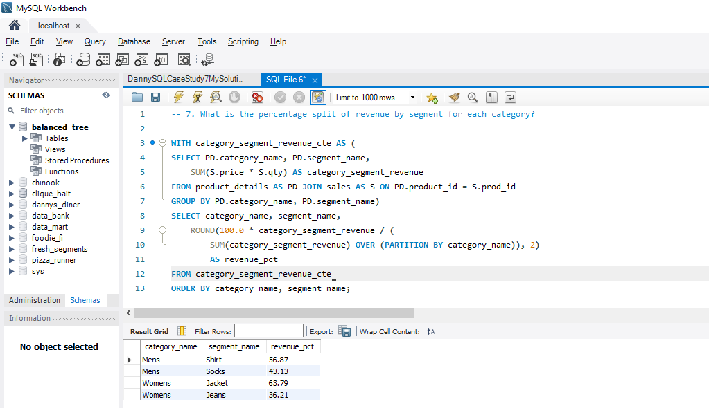
- 8. What is the percentage split of total revenue by category?
Explanation:
This SQL query analyzes the percentage split of total revenue by category.
1) Calculating Category-wise Total Revenue:
WITH category_revenue_cte AS (
SELECT PD.category_name,
SUM(S.price * S.qty) AS category_revenue
FROM product_details AS PD JOIN sales AS S ON PD.product_id = S.prod_id
GROUP BY PD.category_name)Creates a Common Table Expression (CTE) named ‘category_revenue_cte’ that calculates the total revenue for each category.
2) Calculating the Percentage Split of Total Revenue:
SELECT category_name,
ROUND(100.0 * category_revenue / (
SUM(category_revenue) OVER()), 2)
AS revenue_pct
FROM category_revenue_cte
GROUP BY category_name
ORDER BY category_name;Calculates the percentage split of total revenue for each category by dividing the category’s revenue by the overall total revenue. The result is rounded to two decimal places.
Final Concise Explanation: This SQL query provides the percentage split of total revenue by category by calculating the total revenue for each category and then determining the percentage of each category’s revenue relative to the overall total revenue. The results are ordered by category name for clarity.
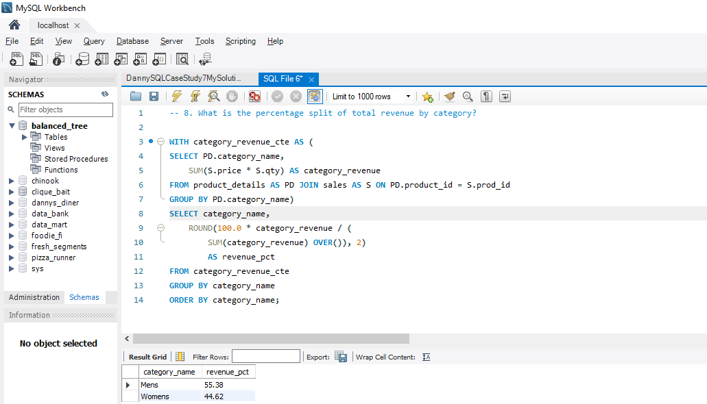
- 9. What is the total transaction “penetration” for each product? (hint: penetration = number of transactions where at least 1 quantity of a product was purchased divided by total number of transactions)
Explanation:
This SQL query calculates the total transaction “penetration” for each product.
1) Calculating Product-wise Transaction Count:
WITH product_transactions AS (
SELECT PD.product_name,
COUNT(DISTINCT S.txn_id) AS product_transactions,
(SELECT COUNT(DISTINCT txn_id) FROM sales) AS total_number_of_transactions
FROM product_details AS PD JOIN sales AS S ON PD.product_id = S.prod_id
GROUP BY PD.product_name)Creates a Common Table Expression (CTE) named ‘product_transactions’ that counts the number of distinct transactions for each product and also calculates the total number of distinct transactions in the entire dataset.
2) Calculating the Percentage Split of Total Revenue:
SELECT product_name,
ROUND(100.0 * (product_transactions / total_number_of_transactions), 2) AS product_penetration
FROM product_transactions
ORDER BY product_penetration DESC;Calculates the total transaction “penetration” for each product by dividing the product’s transaction count by the total number of transactions and multiplying by 100. The result is rounded to two decimal places and the output is ordered by product penetration in descending order.
Final Concise Explanation: This SQL query provides the total transaction “penetration” for each product by calculating the percentage of transactions where at least 1 quantity of a product was purchased relative to the total number of transactions. The results are ordered by product penetration in descending order for clarity.
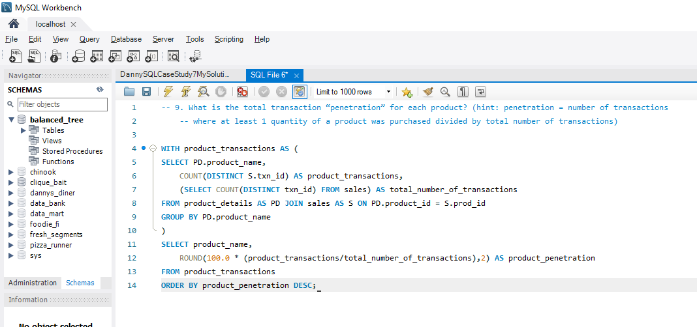
The output of the above query is:
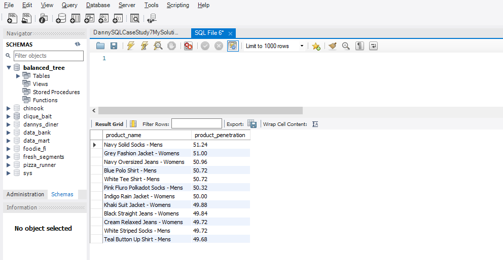
- 10. What is the most common combination of at least 1 quantity of any 3 products in a 1 single transaction?
Reporting Challenge
Write a single SQL script that combines all of the previous questions into a scheduled report that the Balanced Tree team can run at the beginning of each month to calculate the previous month’s values.
Imagine that the Chief Financial Officer (which is also Danny) has asked for all of these questions at the end of every month.
He first wants you to generate the data for January only - but then he also wants you to demonstrate that you can easily run the samne analysis for February without many changes (if at all).
Feel free to split up your final outputs into as many tables as you need - but be sure to explicitly reference which table outputs relate to which question for full marks :)
Bonus Challenge
Use a single SQL query to transform the product_hierarchy and product_prices datasets to the product_details table.
Hint: you may want to consider using a recursive CTE to solve this problem!